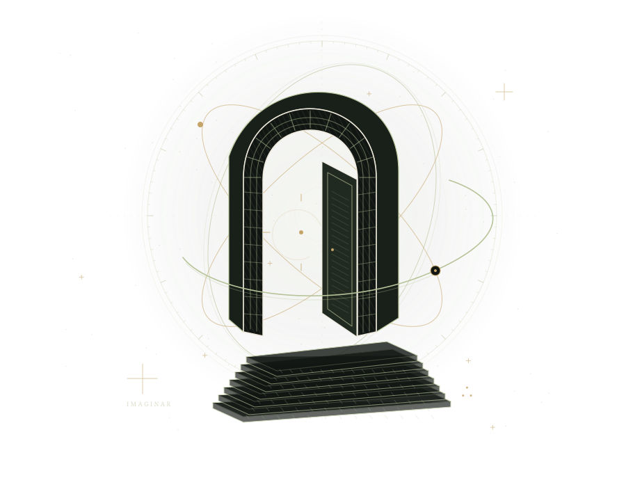

Un mundo sin oráculos.
Áncora entregó sus decisiones a una inteligencia. Sus habitantes tendrán que recuperar algo más difícil que las respuestas: la costumbre de preguntar.
Entra en Los Últimos UniversalesUna invitación a pensar por cuenta propia
El futuro necesita
mejores preguntas.
Una ficción, una filosofía y un conjunto de prácticas para imaginar otros futuros y decidir por ti en la era de la inteligencia artificial.
Lectura gratuita · Sin cuenta · En español

01 / Tres puertas de entrada
No necesitas aceptar una doctrina para entrar. Empieza por una ciudad imposible, examina sus ideas y lleva una pregunta a tu vida cotidiana.
Áncora entregó sus decisiones a una inteligencia. Sus habitantes tendrán que recuperar algo más difícil que las respuestas: la costumbre de preguntar.
Entra en Los Últimos UniversalesRealidad, Persona, Responsabilidad y Reciprocidad. Una propuesta para discutir el poder, la abundancia y los límites de cualquier inteligencia.
Examina los fundamentosDetenerte antes de decidir. Separar un hecho de una interpretación. Discrepar sin romper la cooperación. Hacerte cargo de lo que puedes reparar.
Prueba el Ritual del Umbral02 / Un pequeño laboratorio de pensamiento
Una misma idea puede ser una ficción, una pregunta moral o una afirmación que necesita evidencia. Recorre el ejemplo y observa qué cambia.
Geometría simbólica. No representa un modelo físico.
UNA POSIBILIDAD / NO UNA PREDICCIÓN
Imagina energía abundante, máquinas que producen alimentos y tiempo para cuidarnos. La ficción permite explorar esa posibilidad antes de saber si podemos realizarla.
Abre un escenario. Todavía no demuestra que sea posible ni que vaya a ocurrir.
Una pregunta para llevarte
Si todavía no tenemos una explicación, ¿qué podemos concluir?
03 / Un lenguaje para recordar
La estética puede guardar misterio. Las afirmaciones deben dar razones. Estas nueve marcas recuerdan prácticas; ninguna demuestra una fuerza invisible.
Antes de cruzar: nombra lo que sabes, lo que supones y lo que todavía no sabes.
04 / La incógnita también tiene lugar
¿Por qué existe algo? ¿Qué llamamos Dios? El libro deja espacio para la metafísica: explorar esas preguntas no obliga a inventar una certeza.
Lee lo que el libro no decide ↗Las tres formas conviven. «La Apertura» es la tradición filosófica propuesta por el libro, con símbolos y ritos. «Los Últimos Universales» es su ficción. Puedes leer, discutir y rechazar sus ideas sin adherirte a una creencia.
Las afirmaciones sobre hechos necesitan evidencia. Los compromisos éticos necesitan argumentos. Las preguntas metafísicas pueden seguir abiertas. No tener una explicación no constituye evidencia de una causa sobrenatural.
Lee El día en que dejamos de preguntar para entrar por la imaginación, o prueba el Ritual del Umbral para examinar una decisión concreta.
Sí. Descarga la edición de texto e ilustraciones, descomprime el ZIP y abre index.html. También tienes el libro en un solo HTML, listo para imprimir, y en Markdown. El ZIP no incluye las grabaciones de audio.
El futuro vuelve a ser posible
Este tampoco. Ábrelo, imagina y discute.
Edición descargable · Texto e ilustraciones · Sin audio